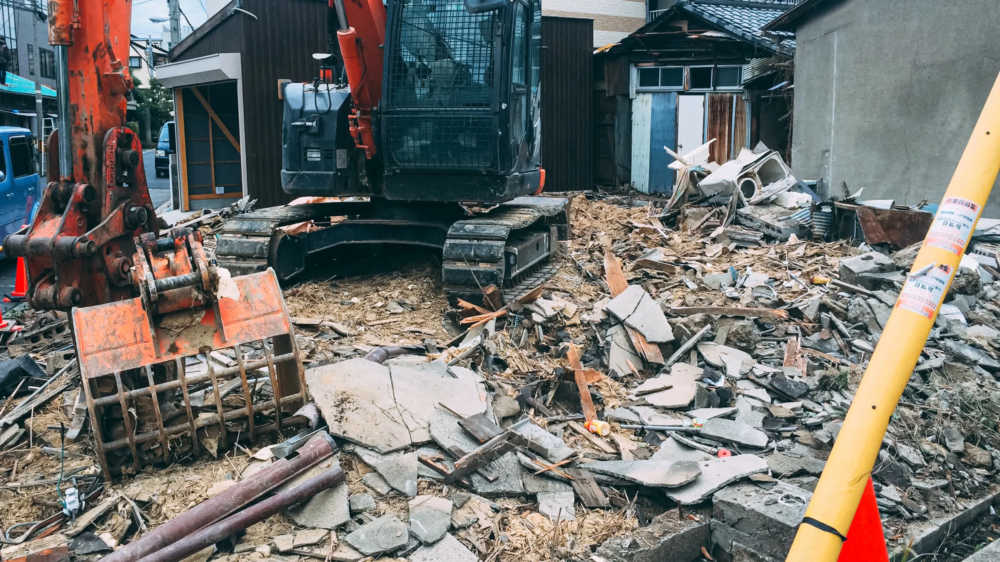

日和建設の理念は「平和」── 騙し合い、いじめ、環境破壊、迷惑のない平和な事業をめざしています。2017年の外壁・塗装事業から始まり、解体・アスベスト除去まで、建物の一生に幅広く関わってきました。
塗装で始まり、解体・アスベスト除去まで。外壁を読む眼と、近隣を歩く足が、私たちの土台です。

木造、鉄骨、RC、そして部分解体まで全工種対応。近隣を歩いて挨拶する地道な合意形成と、現場で積み上げた施工管理。「壊す」を雑にしない、それが日和の作法です。
解体工事の詳細へ
粉じんを外に出さない封じ込め、レベル1〜3 対応、行政手続きの代行まで。500 件超で培った段取りで、住民・労働者・大気の三方向に責任を持ちます。
アスベスト除去の詳細へ
創業当初の主事業は塗装でした。だからこそ、外壁の劣化を「見抜く眼」と「適切な材料選定」が私たちの土台。塗り替え、解体前診断、シーリングまで。
塗装・外壁工事の詳細へ直近の代表的な 6 現場を抜粋しました。完工までに動いた職人・近隣・施主、すべてに感謝を。
フォーム or お電話。当日中に一次回答します。
構造、外壁、近隣動線まで実地確認。最短翌日。
工種別の内訳と注釈つき。文書で必ずお出しします。
着工 2 週間前から、30m 圏に直接訪問。
騒音・粉じん・産廃を毎日記録。LINE 日報共有も可。
整地・清掃完了後、近隣にも完了のご挨拶を。
2021年7月、堺の事務所5名でのスタート。創業から 4 年で、解体実績1,000件・アスベスト除去500件を積み上げてまいりました。
株式会社 日和建設
2021年 7月 2日
吉田 光輝
大阪府知事 解体業許可
第 1494 号